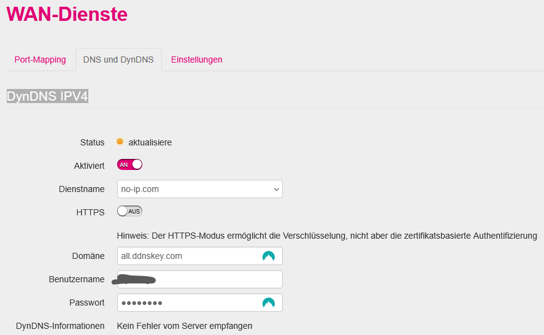

Hello zusammen!
Ich habe seit einigen Wochen meinen "Internet Home Fiber" Anschluss von Magenta - soweit alles gut (mit dem Internet), aber: ich bekomme die DynDNS Funktion nicht zum Laufen. Umstellung auf IPv4 ist bereits erfolgt; Rückfragen bei der techn. Hotline waren erfolglos (bzw. wurde Rückruf versprochen, der bislang ausblieb). Mit denselben Zugangsdaten funktionierte DynDNS an meinem alten A1TA Router und derzeit auf meiner Synology-NAS (als Überbrückungslösung):

HTTPS AN/AUS macht keinen Unterschied.
Hat jemand diese Konfiguration, diesen Router mit DynDNS am Laufen?
Danke und LG
Andreas
Hello zusammen!
Im Gegensatz zu meinem alten A1TA Router bekomme ich das Port Forwarding am neuen Magenta Router nicht zum Laufen. Sinn der Übung wäre z.B. ein Zugriff von außen auf mein NAS (OPEN-VPN Verbindung, Port 1194; NAS hat die IP-Adresse 10.0.0.220 im LAN). Lt. techn. Hotline soll das Feld "Quell-IP" leer bleiben - funktoniert aber trotzdem nicht.
Hat jemand mit dem oben beschriebenen Router Port Forwarding erfolgreich etabliert?
Danke und LG,
Andreas
PS: Umstellung auf IPv4 ist bereits erfolgt
Bearbeitet von cal032Hallo @cal032 , ich habe für dich beim Technikteam nachgefragt.
Alle Einstellungen, die am Screenshot zu sehen sind, sind korrekt 👍 .
Prüf bitte noch die Firewall Settings auf deinem NAS.
Und - beim Testen vielleicht nicht aus dem lokalen Netz, bitte über die öffentliche IP testen. Wenn möglich mit einem Gerät aus einem anderen Netz. LG Karo
Am 9.5.2025 um 11:05 schrieb Karo:Hallo @cal032 , ich habe für dich beim Technikteam nachgefragt.
Alle Einstellungen, die am Screenshot zu sehen sind, sind korrekt 👍 .
Prüf bitte noch die Firewall Settings auf deinem NAS.
Und - beim Testen vielleicht nicht aus dem lokalen Netz, bitte über die öffentliche IP testen. Wenn möglich mit einem Gerät aus einem anderen Netz. LG Karo
Herzlichen Dank für die Nachfrage!
1.) Firewall auf NAS ist de-aktiviert
2.) Ich teste "von außen" (d.h. entweder vom Handy, ohne WLAN oder per Laptop z.B. aus dem Büro)
3.) mit dem "alten" A1TA Router (läuft noch, bis Ende Mai) funktioniert es in dieser Konstellation (also mit denselben IP-Adressen, demselben OPEN-VPN Server auf der NAS, Firewall Settings,...)
Weitere Ideen?
Danke und LG,
Andreas
Hallo @cal032 , ich bin selbst keine Expertin und würde beim Technikteam nochmals nachhaken.
Am besten wäre es, wenn wir genaue Infos zu deiner Verbindung/Vertrag hätten.
Da in der Community kein 1:1 Support angeboten wird, ist es hier schwierig ins Detail zu gehen.
Hast du vielleicht einen Social Media Account?
Falls ja, schreib uns bitte eine Privatnachricht über Facebook, Instagram oder X, damit wir uns zu dem Thema besser austauschen können. UND - bitte bezieh dich in der Nachricht auf diesen Thread in der Community.
Wichtig hier zu beachten:
Wir möchten dich vorab noch darauf hinweisen, dass deine von dir übermittelten personenbezogenen Daten bzw. Nachrichten auch von *Meta/X* verarbeitet werden. Dasselbe gilt auch für personenbezogene Daten bzw. Nachrichten, welche wir im Laufe dieser Unterhaltung an dich senden.
LG Karo
Hi! Ich habe per FB-Messenger geschrieben
Hallo ! ich habe exakt das selbe Problem: IPv4 aktiviert, port forwarding eingestellt, leider ohne Funktion !
Mit meinem anderen Anbieter (drei 5G) den ich parallel noch habe, funktioniert es einwandfrei.
Bitte um Hilfestellung, vielen lieben Dank!
Am 12.6.2025 um 20:10 schrieb Waggy685:Hallo ! ich habe exakt das selbe Problem: IPv4 aktiviert, port forwarding eingestellt, leider ohne Funktion !
Mit meinem anderen Anbieter (drei 5G) den ich parallel noch habe, funktioniert es einwandfrei.
Bitte um Hilfestellung, vielen lieben Dank!
Ja, mittlerweile (Router-Tausch, etc.) bin ich mir ziemlich sicher, dieser Router kann das nicht (DynDNS übrigens auch nicht) - ein Jammer aber: Ich habe einen Workaround gefunden, mit dem das PortForwarding zumindest zu einer internen IP-Adresse (in meinem Fall das NAS) funktioniert: im 3.ten Reiter bei den WAN-Diensten habe ich DMZ aktiviert, und dort die IP-Adresse vom NAS eingetragen und damit funktioniert auch das PortFWD an diese (aber eben nur diese eine) IP-Adresse. Siehe auch Screenshots anbei. Würde mich freuen, wenn das bei Dir auch hilft. LG, Andreas
Hey, cooler Workaround! 😎 Hast du schon ausprobiert, ob das auch mit mehreren Geräten gleichzeitig klappt, oder ist das strikt nur für eine IP-Adresse gedacht? Klingt nämlich praktisch, wenn man sein NAS schnell erreichbar machen will!
Am 17.6.2025 um 06:10 schrieb Funkloch-GmbH:Hey, cooler Workaround! 😎 Hast du schon ausprobiert, ob das auch mit mehreren Geräten gleichzeitig klappt, oder ist das strikt nur für eine IP-Adresse gedacht? Klingt nämlich praktisch, wenn man sein NAS schnell erreichbar machen will!
Hi! ...wie gesagt, im Reiter "Einstellungen" -> "DMZ" kann man nur eine IP-Adresse eingeben (und nicht einen Bereich). D.h. man kann sich - meiner Ansicht nach - "aussuchen", ob das Port-FWD zum NAS (in meinem Fall die 192.168.178.220) funktioniert, oder z.B. zu einem Rechner auf dem ein Minecraft-Server läuft. Beides gleichzeitig geht mit diesem Router nicht. Mit dem Zyxel von A1TA (zuvor im Einsatz) war das alles kein Problem. Sollte jemand andere Erfahrungen machen, bitte gerne um Info! Danke und LG, Andreas
Am 17.6.2025 um 09:42 schrieb cal032:Hi! ...wie gesagt, im Reiter "Einstellungen" -> "DMZ" kann man nur eine IP-Adresse eingeben (und nicht einen Bereich). D.h. man kann sich - meiner Ansicht nach - "aussuchen", ob das Port-FWD zum NAS (in meinem Fall die 192.168.178.220) funktioniert, oder z.B. zu einem Rechner auf dem ein Minecraft-Server läuft. Beides gleichzeitig geht mit diesem Router nicht. Mit dem Zyxel von A1TA (zuvor im Einsatz) war das alles kein Problem. Sollte jemand andere Erfahrungen machen, bitte gerne um Info! Danke und LG, Andreas
...oder meinst Du, mit wie vielen Geräten Du zum NAS von außen zugreifen kannst? ...das hängt davon ab, wie viele gleichzeitige/parallele Sessions Du beim OPEN-VPN-SERVER am NAS zulässt. Desweiteren musst Du Deine WAN-IP-Adresse kennen (daher auch das Drama mit dem DynDNS Thema, weil das mit dem Router auch nicht geht - das habe ich am NAS direkt gelöst)
Hey Andreas, mega interessant dein Thema mit dem Router und der DMZ! Da würde ich glatt mal nachhaken, so als „normaler“ Magenta-Kunde, der nur versucht, seine Kiste am Laufen zu halten. Hier ein paar Fragen, die mir spontan einfallen:
Heißt das, wenn ich zum Beispiel meinen Minecraft-Server und mein NAS gleichzeitig von außen erreichen will, klappt das mit dem Magenta-Router nicht so easy? Muss ich dann echt immer umschalten, was ich freigebe?
Wie genau hast du das mit dem DynDNS am NAS gelöst? Gibt’s da eine einfache Schritt-für-Schritt-Anleitung oder ein spezielles Tool, das du empfehlen kannst?
Du hast das mit dem Zyxel von A1TA erwähnt – ist der im Vergleich zum Magenta-Router generell flexibler, was Port-Forwarding und DMZ angeht? Oder ist das eher ein Einzelfall?
Wenn ich mehrere Geräte per OpenVPN auf mein NAS zugreifen lassen will, wie viele gleichzeitige Verbindungen sind denn realistisch? Gibt’s da Limitierungen vom NAS oder vom Router?
Und ganz ehrlich: Wie nervig ist das Ganze im Alltag? Muss man ständig basteln und testen, oder läuft das einmal eingerichtet dann einfach?
So, das wären meine Fragen aus der Praxis! Erzähl mal, wie du das siehst? Klingt nach einem spannenden Router-Dschungel!
Am 22.6.2025 um 15:15 schrieb Waggy685:
@Karo ...dazu kann ich auch nichts sagen 😉
Am 18.6.2025 um 05:14 schrieb Funkloch-GmbH:Hey Andreas, mega interessant dein Thema mit dem Router und der DMZ! Da würde ich glatt mal nachhaken, so als „normaler“ Magenta-Kunde, der nur versucht, seine Kiste am Laufen zu halten. Hier ein paar Fragen, die mir spontan einfallen:
Heißt das, wenn ich zum Beispiel meinen Minecraft-Server und mein NAS gleichzeitig von außen erreichen will, klappt das mit dem Magenta-Router nicht so easy? Muss ich dann echt immer umschalten, was ich freigebe?
Wie genau hast du das mit dem DynDNS am NAS gelöst? Gibt’s da eine einfache Schritt-für-Schritt-Anleitung oder ein spezielles Tool, das du empfehlen kannst?
Du hast das mit dem Zyxel von A1TA erwähnt – ist der im Vergleich zum Magenta-Router generell flexibler, was Port-Forwarding und DMZ angeht? Oder ist das eher ein Einzelfall?
Wenn ich mehrere Geräte per OpenVPN auf mein NAS zugreifen lassen will, wie viele gleichzeitige Verbindungen sind denn realistisch? Gibt’s da Limitierungen vom NAS oder vom Router?
Und ganz ehrlich: Wie nervig ist das Ganze im Alltag? Muss man ständig basteln und testen, oder läuft das einmal eingerichtet dann einfach?
So, das wären meine Fragen aus der Praxis! Erzähl mal, wie du das siehst? Klingt nach einem spannenden Router-Dschungel!
1.) korrekt - bis dato ist mir (unter Nutzung der DMZ Einstellung) nur gelungen, eine interne IP-Adresse mit einer Port-FWD Regel zu beglücken (nämlich die, die man in der DMZ-Einstellung angibt). Beim A1TA Router gab es diese Einschränkung nicht
2.) DynDNS am NAS: ist bei meinem Synology einfach ein Menüpunkt unter Systemsteuerung/Externer Zugriff (siehe Screenshot) - dort trägt man die Zugangsdaten ein, je nachdem, welchen Dienst man verwendet
3.) Zyxel Router von A1TA: ja, der machte mir einen etwas professionelleren Eindruck - höflich ausgedrückt 😉
4.) OpenVPN: max. Anzahl an erlaubten Verbindungen kann man beim OpenVPN Server (am NAS) konfigurieren - siehe Screenshot
5.) sobald eingerichtet, läuft das - nachbessern muss man immer (z.B. SW-Updates, Zertifikate, etc.) aber das bleibt ohnehin nicht erspart. Das Thema hier ist, dass der von Magenta zur Verfügung gestellte Router einige grundsätzliche Dinge nicht (oder noch nicht) unterstützt
LG
{kind=link}
{kind=link}
{kind=link}
{kind=link}
{kind=link}
{kind=link}